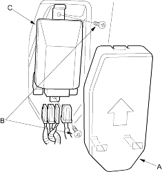
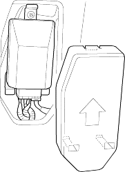

Removal
- Disconnect the negative battery cable and wait at least 3 minutes before beginning work.
- Disconnect the side airbag harness 2P connector (see step 4 on page 23-32).
- Remove the seat assembly (see page 20-87) and seat-back cover (see page 20-92).
- Remove the cover (A), then disconnect the OPDS unit harness 8P and sensor connectors from the OPDS unit.

- Remove the two screws (B) and OPDS unit (C).
- Place the new OPDS unit on the seat-back frame. Tighten the two screws (A) and connect the OPDS unit harness 8P and sensor connector to the OPDS unit. Reinstall the cover.

- Install the seat-back cover (see page 20-92).
- Install the seat assembly (see page 20-87), then connect the side airbag harness 2P connector.
- Reconnect the battery negative cable.
- Set the seat-back in the normal position and make sure there is nothing sitting on the front passenger's seat.
- Initialise the OPDS unit (see page 23-39).
- After installing the OPDS unit, confirm proper system operation: Turn the ignition switch ON (II); the SRS indicator light should come on for about 6 seconds and then go off.